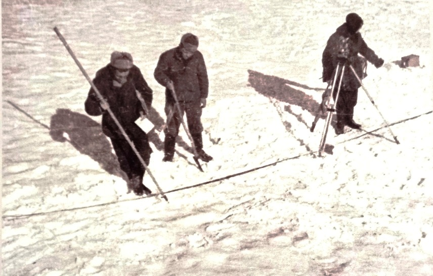
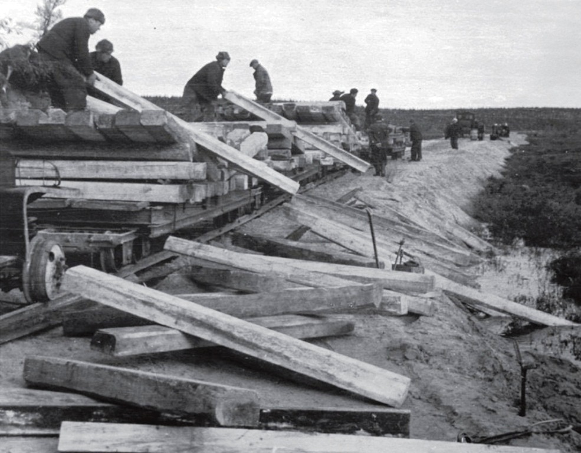

В 1942-44 годах немецко-фашистские морские соединения блокировали и частично уничтожили советское судоходство на трассе Северного морского пути. С советской стороны погибло 964 человека, 17 кораблей были затоплены или серьёзно повреждены. Гитлеровский флот потерял лишь 2 подводные лодки. Нацистские арктические базы в 1941-1944 годах действовали на Новой Земле, на берегах Обской губы и Енисейского залива.
Руководству нашей страны стало очевидно, что советская оборона арктических морских коммуникаций слаба. Необходимо было строить морские и военно-воздушные базы. Для этого нужна была железная дорога, идущая параллельно Транссибирской магистрали, по северным районам страны. Первые изыскания будущей трассы железной дороги состоялись в 1943-44 годах.
6 и 9 августа 1945 года военно-воздушные силы США сбросили атомные бомбы «Малыш» и «Толстяк» на японские города Хиросиму и Нагасаки. Погибло более 180 тысяч человек. Полёт бомбардировщиков со смертоносными зарядами над Северным полюсом и сброс атомных бомб на города СССР стали вероятностью. На севере нашей страны сплошной системы противовоздушной обороны не было.
22 апреля 1947 года Совет Министров СССР принял постановление, в котором обязал МВД немедленно приступить к строительству крупного морского порта в Обской губе на мысе Каменный, судоремонтного завода и жилого посёлка, а также начать строительство железной дороги от Печорской магистрали к порту. Проект её сооружения был назван «строительство № 502». Но в начале 1949 года случился большой казус: выяснилось, что акватория Обской губы слишком мелководна для океанских судов. Поэтому правительство обратило своё внимание на следующую акваторию – реку Енисей.
5 февраля 1949 года было принято Постановление Совета Министров СССР, в котором говорилось о строительстве железной дороги Салехард (р. Обь)-Игарка (р. Енисей) протяжённостью в 1300 километров. В IV квартале 1952 года предполагалось открыть рабочее движение по новой дороге, а в 1955 году начать её эксплуатацию.
При Северном Управлении сформировали два строительства – Обское № 501 и Енисейское № 503. Им предстояло прокладывать путь навстречу друг другу. Всем строительством руководил начальник Северного Управления МВД СССР Василий Арсениевич Барабанов.
К началу строительства на линии будущей магистрали было всего 5-6 маленьких населённых мест по нескольку домов в каждом, таких, как фактория Уренгой на берегу реки Пур. На новой железной дороге собрались построить 28 станций и 106 разъездов. В районе будущего города Новый Уренгой спроектировали станцию Ягельная. Лесотундру в короткие сроки наполнили десятки тысяч человек, которые через каждые 5-10 км вдоль дороги строили лагерные пункты на 400-500 человек.
Каждый лагерь представлял собой участок земли размером примерно 200 на 200 метров, огороженный тремя рядами колючей проволоки. По углам квадрата устанавливали вышки охраны с прожекторами.
На территории лагерного пункта ставили 5-6 бараков для заключённых. Бараки были разделены на две половины на 40 человек каждая. Входы в половины бараков были раздельные. В центре каждой половины сооружали печку из старой металлической бочки или кирпича. Вдоль стен настилали двухъярусные деревянные нары.
На территории каждого лагеря размещали также столовую, штрафной изолятор, баню для заключенных, иногда продуктовый ларек, склад личных вещей, медпункт, библиотеку, спецотдел, ведавший учётом зэков и распределением рабочей силы, опер-чекистский отдел, культурно-воспитательный и другие отделы.


За пределами лагеря располагались казарма охраны и жилье для начальства.
Связь строителей с управлениями поддерживалась сначала по радио, а затем по столбовой телефонно-телеграфной линии, протянутой в конце 1949 года от Салехарда до Игарки вдоль предполагавшейся трассы.
Она обеспечила прямую связь обоих строительств с Москвой. Для поддержания работоспособности линии через каждый 20 км были устроены избушки связистов.
Строительство трансполярной магистрали полностью перевернуло и подчинило себе жизнь этого ранее малонаселённого края. Вдоль всей магистрали специальными тракторными поездами был проложен автозимник.
Лагерные пункты размещали вдоль автозимника. Строили в основном в короткий летний сезон. Порядок строительства трассы выглядел так. Сначала, если был лес, рубили просеку. Затем выкапывали водоотводы для осушения местности. Далее прокладывали временные автодороги к строительным карьерам. На осушенной полосе лесотундры устраивали лежнёвку – бревенчатую дорогу, на которую сверху возводили из каменно-песочной смеси насыпь и укладывали полотно железной дороги.
Рельсы доставляли с большой земли. Кроме отечественных и трофейных, вывезенных после Великой Отечественной войны из Германии, использовали рельсы, купленные ещё во времена Российской Империи у той же Германии, США, Люксембурга и прочих.


Через малые водотоки строили мосты, которые привозили с салехардского деревообрабатывающего комбината в почти собранном виде. Мосты через реки средней величины сооружали из металла.
Строительство вели в условиях вечной мерзлоты. Поэтому летом после таяния верхнего слоя почвы, происходила деформация полотна дороги и её инженерных сооружений. Большие силы ежегодно уходили на ремонт насыпи, укрепление полотна, мостов и прочие работы.
К концу 1952 года строительство № 501 вышло к реке Большая Хетта, которая находится примерно в 30 км восточнее реки Надым. В августе 1952 года, как и было запланировано, открыли рабочее движение на участке Салехард-Надым. В марте 1953 года между населёнными пунктами ходил пассажирский поезд.
Всё закончилось в один миг. 5 марта 1953 года умер И. В. Сталин. 25 марта 1953 года вышло постановление Совета Министров СССР, согласно которому строительство железной дороги Чум-Салехард-Игарка, а также порта, судоремонтных мастерских и жилого посёлка в районе города Игарки было прекращено. Из указанных в проекте 1470 километров главного пути этой железной дороги успели уложить 887 км, а из 112,5 километра станционных путей – 76 километров. То есть провели больше половины всех работ.
Весной 1953 года здесь трудились 28 000 заключённых, 2 500 человек охраны, 2 800 вольнонаёмных рабочих, 4 500 представителей административно-технического персонала, 1 200 человек лагерного персонала. Всего 39 000 человек.
26 мая 1953 года появилось постановление о ликвидации до 1 сентября строительства железной дороги Чум-Салехард-Игарка. В дальнейшем Министерство путей сообщения добилось разрешения на ликвидацию всех подразделений строительства, кроме участка железной дороги Чум–Лабытнанги, принятого в 1955 году в постоянную эксплуатацию. Телефонную линию на участке Салехард-Игарка приняло в эксплуатацию Министерство связи. В короткие строки всё, что можно было вывезти, вывезли, что нельзя – уничтожили или бросили. Заключённых, которые не подлежали амнистии, отправили на другие стройки.
Так вкратце выглядит история трансполярной дороги – грандиозного незавершенного замысла, который, будь он воплощен в жизнь, значительно облегчил бы освоение открытых позже месторождений углеводородов и, как знать, мог изменить ход всей истории нашей страны.
В 1943-1944 годах здесь отработали партии геодезистов и топографов, которые заложили пункты опорной геодезической сети. Затем проектировщики наметили будущую трассу и места под строительство объектов железнодорожной инфраструктуры. Они вписали типовой проект станции в существующий ландшафт.
Надымский историк Вадим Николаевич Гриценко передал нам план спроектированной на месте будущего Нового Уренгоя станции Ягельная. Он полностью повторяет элементы ландшафта современной железнодорожной станции Новый Уренгой.
В 1949-1951 годах в районе будущего города построили участок столбовой линии телефонно-телеграфной связи Москва-Игарка и избушки линейных связистов.
Рельсового полотна железной дороги и насыпи в районе будущих жилых массивов Нового Уренгоя не случилось. Укладку рельс остановили западнее современного посёлка Пангоды, у реки Правая (Большая) Хетта, в 180 км западнее от Нового Уренгоя. Далее на восток в сторону реки Пур, большей частью по долине реки Евояхи, было уложено ещё 150 км земляного полотна.
Кольями наметили маршрут будущей железнодорожной насыпи. Летом 1953 года на фактории Уренгой, которая находилась в 80 км восточнее на реке Пур, были сконцентрированы материалы для строительства станций Ягельная и Пур, разъездов Нартовый, Мутный и др. Но именно в этот момент, в середине 1953 года строительство железной дороги остановили.
Станция Ягельная совсем чуть-чуть не дождалась своего строительства, однако имени её не суждено было исчезнуть. Спустя 20 лет, в 1973 году, недалеко от её месторасположения основали посёлок первопроходцев Уренгойского месторождения – Ягельное. Он просуществовал до 1975 года и был переименован в посёлок Новый Уренгой. Но в этом же году имя Ягельное закрепилось за первым аэропортом посёлка, который проработал до 1980 года.
В начале 1980-х годов в 8 км западнее железнодорожного вокзала города Новый Уренгой была построена новая станция Ягельная, навсегда утвердившая в топонимике первое историческое название этой местности. Трансполярная магистраль 1949-1953 годов стала памятником истории.